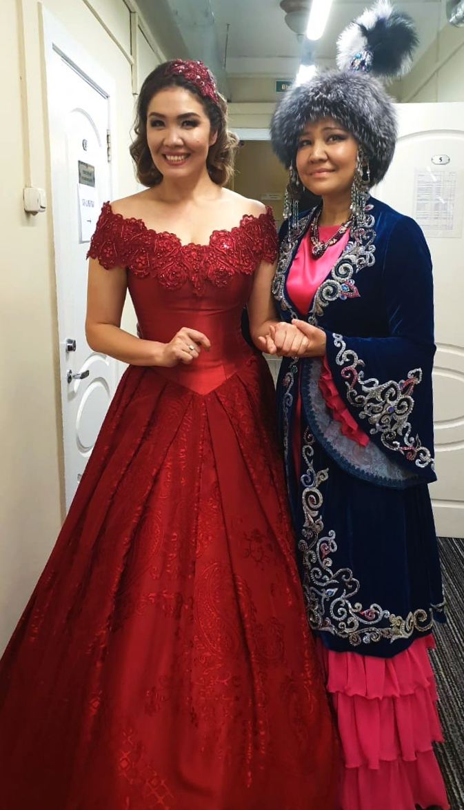

ҚҰСМАНОВТАР ӘУЛЕТІНІҢ ДАРЫНДЫ ҚОС ҚАРЛЫҒАШЫ
Кикенова ( Құсманова) Әлия Қазкенқызы және Бекжанова (Құсманова) Құралай Қазкенқызы - Абай облысы Бесқарағай ауданы Грачи ауылының тумасы. Әпкесі Әлия мен Құралай, өзінің гастрольдік сапарының кестесінің тығыздығы мен бос еместігіне қарамастан, туған ауданының мәдени өміріне араласуға тырысады. Өскемен қаласында Бесқарағай ауданының мәдениет күндері аясында өткізілген "Туған жер – алтын бесігім" атты гала концерттеріне бірнеше рет қатысты.
КИКЕНОВА ӘЛИЯ ҚАЗКЕНҚЫЗЫ

1989 жылы М.Төлебаев атындағы музыкалық училищені "Жеке ән айту"сыныбы бойынша бітірді. Римский-Корсаков атындағы Ленинград консерваториясын бітірген. Ұзақ уақыт Санкт-Петербургте тұрады, театрдың жетекші опера әншісі. Опера жауһары Мәскеуде, Санкт-Петербургте және Ресейдің басқа қалаларында жеке концерттермен өнер көрсетеді. Қазақстан мен Украинада, Италия мен Швейцарияда концерт береді. Әлия Кикенова 20 жылдан астам Қазақстанның Санкт-Петербургтегі мәдени елшісі. Туған Отанымен, туған ауданымен мәдени байланыстарды белсенді қолдайды. Өскемен қаласында "Туған ел – алтын бесігім" акциясы аясында өткен Бесқарағай ауданының концертіне қатысты.
БЕКЖАНОВА ҚҰРАЛАЙ ҚАЗКЕНҚЫЗЫ

Қазақ эстрадасының жұлдызы, танымал әнші. Құралайды тыңдарман қауым классикалық әндері арқылы танып, эстрада арқылы сүйсіне тыңдап келеді. Мектепті бітіргеннен кейін Семей қаласындағы Мұқан Төлебаев атындағы музыкалық колледжде, Алматы қаласының Құрманғазы атындағы консерваториясында оқып, Астана қаласында аспирантураны аяқтайды. Қазіргі уақытта Алматы қаласында тұрады, Т.Жүргенов атындағы Ұлттық Өнер академиясында жұмыс істейді. Құралай жұбайы Мираспен бірге классика, ария, романстар, халық әндерін орындайды. Сондай – ақ, репертуарларына қазақстандық сазгерлердің заманауи әндері де кірген. Мирас пен Құралай Бекжановтар Отандық эстрадада отбасылық дуэт ретінде танымал. Алматы қаласындағы «Мирас-Құралай» өнер студиясының негізін салушылары ретінде өнерлі, талантты жастардың шығармашылық тұрғыда өсуіне мүмкіндік береді. Репертуарында "Асыл жарым", "Туған жерім – алтын бесігім", "Ғажайып жаңдар", "Мөлдір сезім" және тағы басқа да әндері бар.